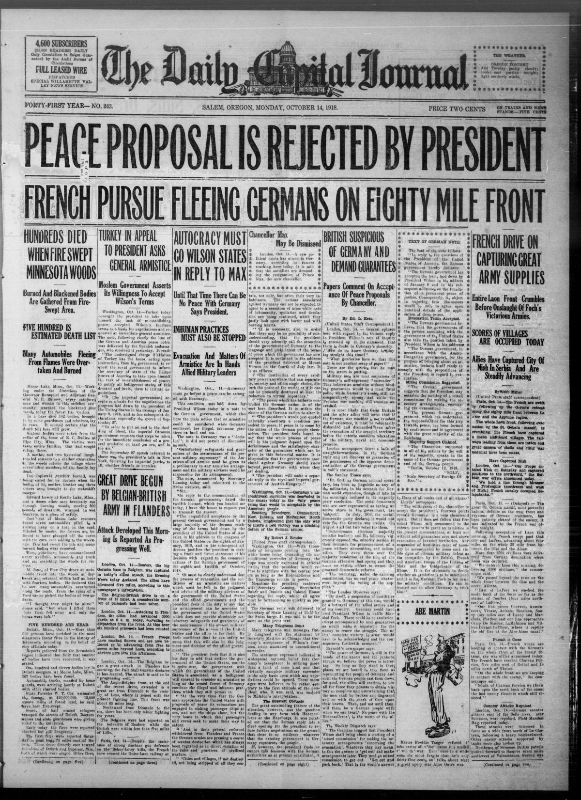
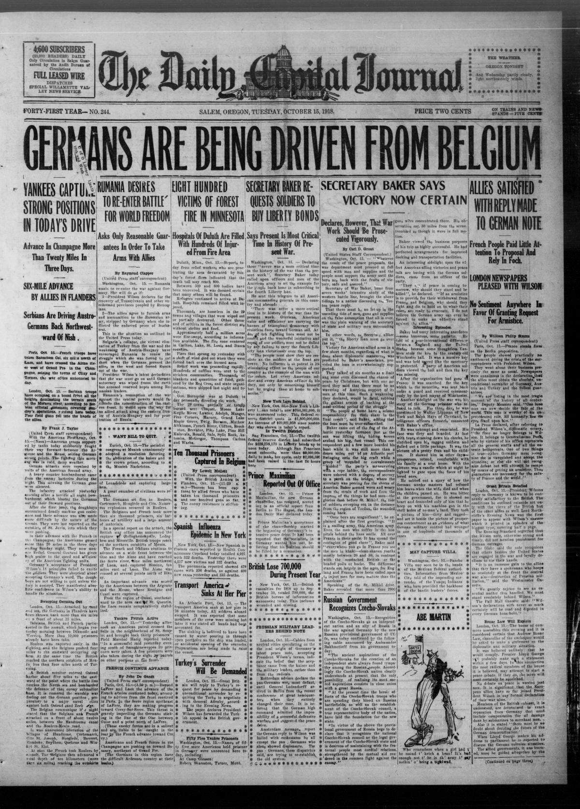
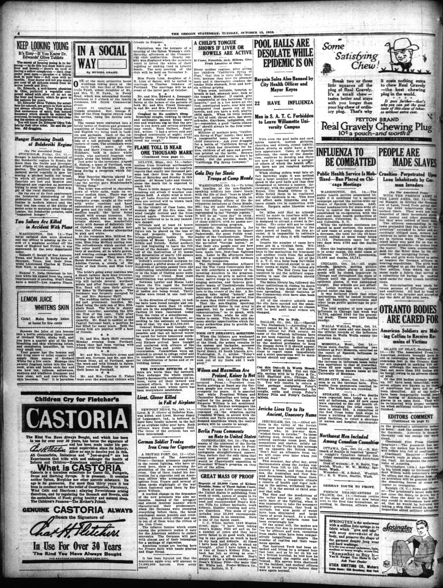
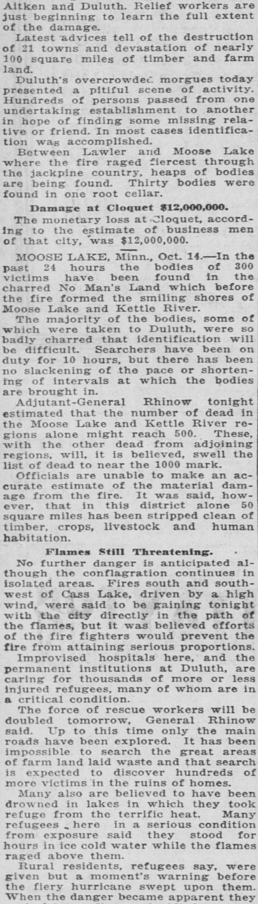
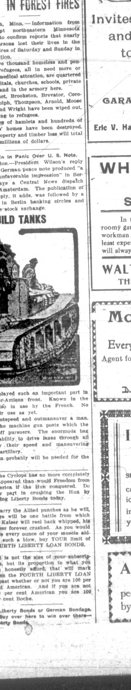

HN HN-411 · October 14, 1918 · Disasters, Accidents & Emergencies > Urban, Forest & Structural Fires > Wildfires
Source: Evening Republican, p. 2 — original page; Minnesota Historical Society's MNopedia collection.
Report: The account feared 500 dead, described towns and rail routes consumed by the Cloquet–Moose Lake fires, and repeated a wartime rumor that enemy agents had caused the devastation. It explicitly conceded no confirmation of the sabotage rumor.
Assessment: Minnesota Historical Society gives at least 453 deaths. The wartime spy explanation was speculation, not a demonstrated origin. Drought, combustible landscapes, and railroad-related ignitions are central to later historical accounts. Do not promote the paper's unconfirmed incendiary allegation to fact.
Authentic scans retrieved from Historic Oregon Newspapers (University of Oregon). Article crops are located using the archive's own ALTO OCR word coordinates and rendered at native crop resolution; page scans are 1,200-pixel-wide renditions. No images were generated, mocked, or retouched.





Not yet acquired. Queued for provider-specific acquisition testing (see source-acquisition manifest).
URL (preserved verbatim): https://newspapers.library.in.gov/?a=d&d=EVRP19181014.2.10
Saved research report: Historical_Newspaper_Event_Research_403-427_2026-10-23.md
Evidence note: A newspaper report means a historical publication made a claim; it does not establish that claim as fact. Contemporary reporting is separated from later scholarly context and our own assessment.